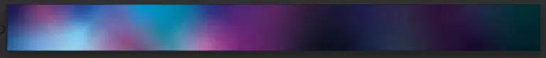
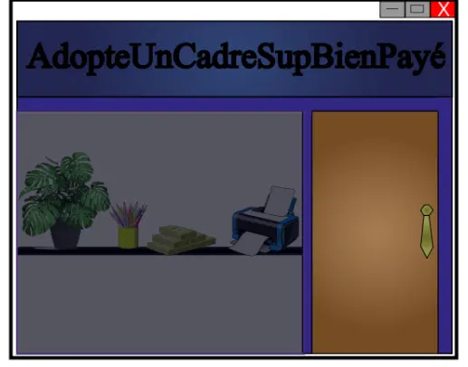
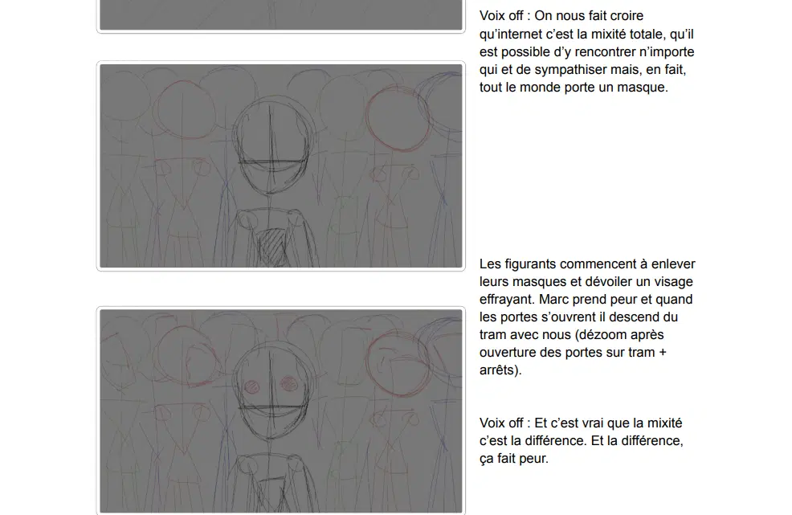

Endogamie Numériquement Assistée
Rendu du projet
 Voir la vidéo sur YouTube
Voir la vidéo sur YouTube
Les algorithmes de rencontre choisissent-ils vraiment nos partenaires à notre place ? 🤔📱
C’est le sujet passionnant sur lequel j’ai travaillé à travers mon projet : « Endogamie Numériquement Assistée » ! 🎬
L’objectif ? Vulgariser en motion design une théorie sociologique complexe sur l’influence des algorithmes de rencontre et la façon dont ils orientent nos choix affectifs.
Sur ce projet, j’ai pu toucher à toute la chaîne de création :
- 💡 Vulgarisation & narration : simplifier des concepts complexes pour les rendre accessibles et captivants.
- ✏️ Storyboard & DA : concevoir le découpage visuel et créer les assets graphiques (décors, personnages, éléments 2D).
- 🎬 Animation & montage : donner vie au récit sous After Effects et finaliser l’ensemble sur Premiere Pro !
DA et fabrication
J’ai participé à la vulgarisation de la théorie, au storyboard, à la création des assets et à l’animation des dernières secondes du film.



Étapes du projet
Écriture et storyboard
J’ai d’abord participé à la vulgarisation de la théorie et à la construction du storyboard pour organiser la narration.

Création des assets
J’ai créé les décors et les éléments graphiques qui composent l’univers visuel de la vidéo.
Animation et montage
Enfin, j’ai animé les dernières secondes du film et participé à la finalisation du montage.

Compétences mobilisées
- Vulgarisation et narration
- Storyboard et direction artistique
- Création d’assets 2D
- After Effects et Premiere Pro